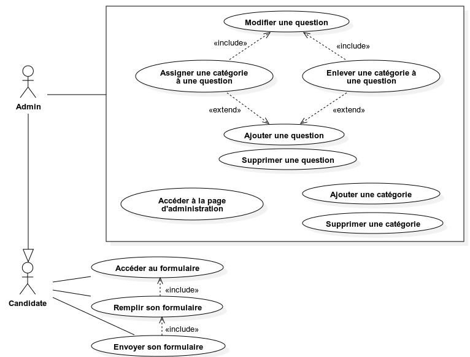
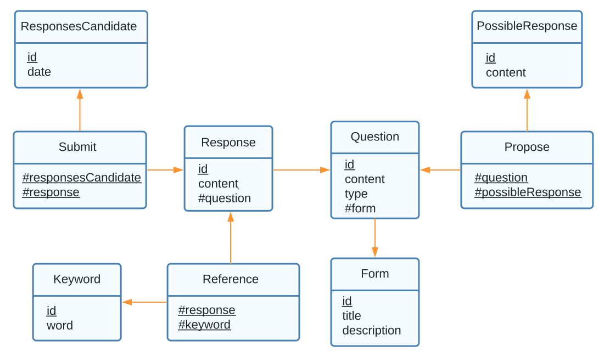

Technologies utilisées: HTML, CSS, PHP, PHP Slim, SQL
Année de réalisation: 2023
Note finale: 12/20
Dernier projet de 2ème année, Témoignage est un projet qui a pour but de récupérer des témoignages d'étudiants et de prof et de les afficher en ligne.
Le sujet était donné par notre département, et il permettait de mettre en avant les vrais témoignages des gens qui ont suivi la formation, afin de guider au mieux les personnes souhaitant rejoindre cette formation.
Par exemple, on intérogeait différents élèves et profs, et on filmait ensuite avec eux une petite vidéo de 5 minutes ou on pose quelque questions pour en savoir plus.
Ce projet était assez simple sur papier, mais nous avons eu pas mal de difficulté comme par exemple le déploiment du site.
Nous avons aussi eu des problèmes de charge de travail au sein du groupe, ce qui a empeché de rendre un site parfait et fonctionnel.
Voici ci-dessous quelques images de notre projet, ainsi que le lien du répo :
Témoignage
Diagramme d'utilisation :

MLD de notre application :
